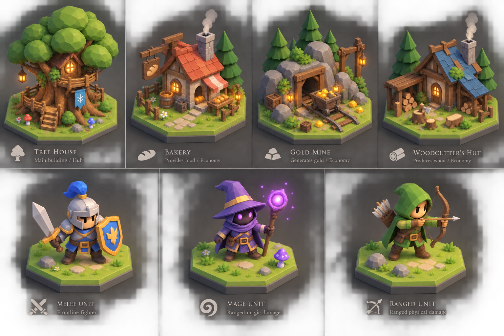

Reference library · Supplied art direction
The next village.
Village buildings, characters, and magical forest hex tiles from all five supplied reference sets. Open an image to inspect it at full size, or follow the links to the Blender source, render, and portable model.
Reuse across the new set
| Components | Where they recur |
|---|---|
| Blue tiles, limestone blocks, timber joinery | Both towers and the cottage workshops |
| Barrels, crates, lanterns, shrubs | Village and defensive buildings |
| Arrows, target, spears | Arrow tower and barracks |
| Books, mugs, benches, parcels | Academy, tavern, and market |
| Skulls and armor spikes | Evil unit faces, buckles, helmets, shoulders, and display props |
| Axe geometry and 19-bone character skeleton | Berserker equipment and the existing character set |
Shared Blender prop library · Autobattler archive checksums · Evil unit archive checksums
Shared forest component library · More building checksums · Magical forest checksums
Original reference board
